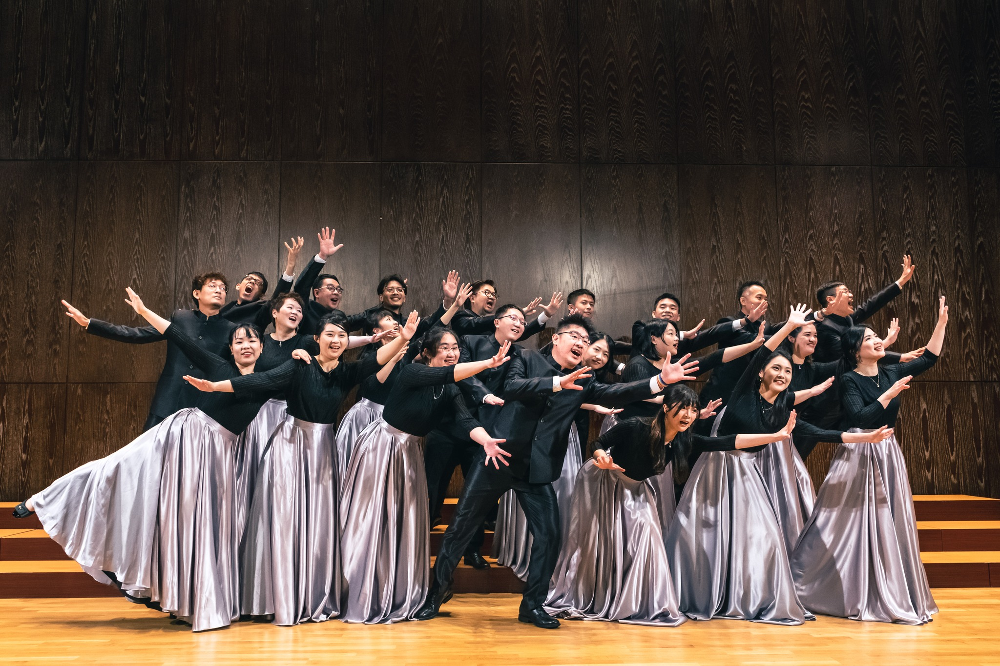
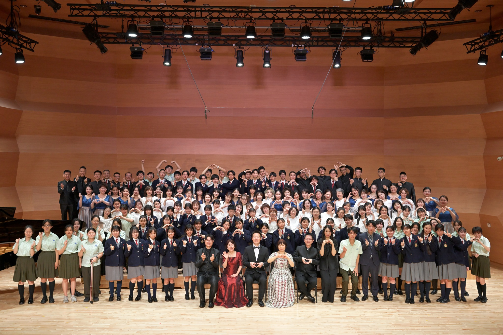

About Me
以使用者研究為核心，
把洞察轉化為產品價值。
10 年間從產品設計、UIUX一路走到產品經理，累積跨實體商品、電商與 AI 產品的開發與管理經驗。我習慣用「研究為基礎、數據為依據」的方式做產品決策，並擅長在 AI × UX 的交會點上，把複雜需求收斂成可落地的產品策略。
01
研究驅動決策
以使用者研究與數據為基礎，降低產品決策的不確定性。
02
洞察轉化價值
把田野與訪談的洞察，轉譯為清晰的產品策略與商業價值。
03
AI × UX 整合
在生成式 AI 與使用者體驗的交會點，設計新的產品形態。
04
0→1 落地力
從問題定義、原型到 MVP，帶跨職能團隊把想法做出來。
核心能力
Work Experience
2023.09 — 2025.08
2 年
雙穎國際股份有限公司
電子商務經理 EC Manager
- 【自動化流程設計】主導 LINE 客服機器人 0→1 專案，自動處理 65.7% 客服問題，回覆等待時間降至 2 秒、用戶滿意度 82%。
- 【AI 工具導入】依部門需求設計 GPTs 並執行跨部門教育訓練：行銷文案產出時間縮短 30 分鐘/篇 ；設計端 AI 圖像生成 prompt 實用性提升70% 。
- 【產品開發維運】建立公司電商平台，定義功能需求、撰寫 PRD，走 Scrum 框架與外包工程師協作。
- 【商業分析與市場策略】透過市場趨勢與客群行為洞察，優化商品策略與網站轉化效能。
2021.09 — 2023.09
2 年 1 個月
誠品生活股份有限公司｜Eslite.com
資深 UI/UX Designer
- 服務規模： 4M+ 線上線下會員平台，App 累積 2.5M+ 下載。
- 【Design System】主導建立 Web & App 元件庫與 Design System，提升設計交付與開發效率。
- 【需求轉化與協作】梳理跨單位需求與資訊架構，轉化為可落地UI/UX設計規格；於 Scrum 框架和 PM、前端、QA、iOS、 Android 協作，確保產品如期落地 。
- 【用戶驗證】執行易用性測試驗證原型，確保 Web & App 商業目標與體驗目標高度對齊。
2020.07 — 2021.02
8 個月
Jieyou Studio 解憂製物所
資深產品設計師 Senior Product Designer
- 【品牌商業策略】主導品牌定位與產品轉化策略，從 0→1 切入市場。
- 【用戶市場研究】進行 21 場 用戶訪談，驗證付費意願與定價區間，定義核心 Persona 作為產品定位與定價核心依據。
- 【 0-1 官網建立】建立開發品牌網站資訊架構，優化關鍵 CTA 配置，帶動顧客詢問量成長 28% 、總瀏覽率成長 17% 。
2017.06 — 2020.05
3 年
ROYAL ELASTICS · 台灣洛雅國際時尚有限公司
產品經理 Product Management Executive
2019.02 — 2020.05
- 主導明星產品 Icon Archer 上市，14 天 達 42.9% 轉換，奪年度品類銷售冠軍。
- 帶領 3 人團隊管理 80–95 個 SKU 的產品開發與規格，建立開發 SOP。
- 進行 50+ 用戶田野，以 STP / VRIO 制定差異化定價並規劃 Product Roadmap。
- 將業務與消費者反饋轉化為產品需求，橋接研發、生產、行銷與業務。
鞋款設計師 Sneaker Designer
2017.06 — 2019.02
- 【產品開發】負責開發鞋款、鞋底花、包款、配件、五金、Pattern。
- 【開發追蹤】與合作廠商聯繫確保商品生產狀況。
Teaching & Workshops
AI × UX 工作坊2025.10
中華電信學院 — AI × UX 研究工作坊（第一場）
中華電信學院
帶領學員以 AI 輔助使用者研究，運用心智圖建構與收斂 UX 策略。
AI × UX 工作坊2025.12
中華電信學院 — AI × UX 產品協作（第二場）
中華電信學院
帶學員用 AI 工具拆解產品問題、加速迭代，並輔以 A/B Testing 驗證產品假設。
企業內訓・實作2025.08
元大證券 開發部門 — AI × UX 實作工作坊
元大證券
協助學員從問題定義、Wireframe 到 POC，將 AI 工具閉環導入產品開發流程。
共同主講2023.04
用實戰突破思維瓶頸！UIUX 入門必修（90 分鐘）
公開課程
為設計／跨域學習者規劃入門工作坊，帶學員 90 分鐘走完從問題定義到原型。
課程滿意度 NPS 79%Education
2012 — 2016
德明財經科技大學
多媒體設計系・學士學位
- 專題研究：《TimeBook》時冊 — 傳統文化導入數位化
Certification / License
- 生成式 AI 能力認證
- AWS 認證的人工智慧從業人員 — 基礎級認證
- Google Ads 搜尋廣告認證
Other Experience
合唱・表演藝術
2016 — Now
台北市松韻合唱團 TSYC
現役團員・Soprano
- 《歌之橋 3》日本橫濱 OBGC & YBGC 聯合演出
- 《菲你不可・歌唱之夜》菲律賓客席指揮 Johnathan Velasco 聯演音樂會
- 《歌之橋 2》日本橫濱 OBGC 聯合演出（日本港未來音樂廳）
- 《絕境重聲》新加坡客席指揮 Jennifer Tham 聯演音樂會

